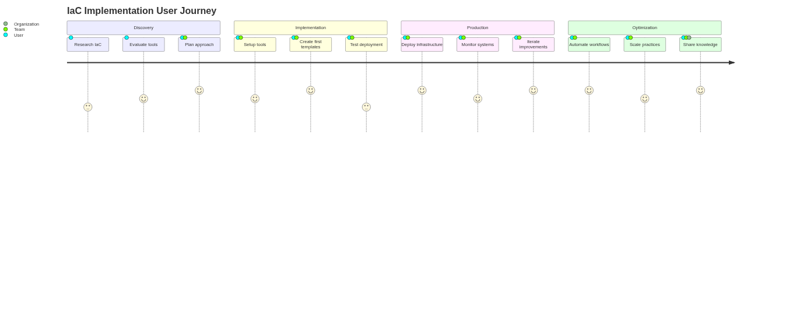

Architecture as Code in praktiken
Praktisk implementation of Architecture as Code requires throughtänkt approach as balanserar technical possibilities with organizational begränsningar. Architecture as Code forms a central komponent, but must integreras with bredare architecture definitions. This chapter focuses on verkliga implementeringsstrategier, vanliga fallgropar, and bepröwhate methods for successful Architecture as Code-adoption in foretagsenvironments.

Diagram above illustrerar The typical användarresan for Architecture as Code-implementation, from initial discovery to complete optimization.
implementation roadmap and strategier
Successful Architecture as Code adoption follows vanligen a phased approach as begins with pilot projects and gradual expanderar to enterprise-wide implementation. Initial phases focuses on non-critical environments and simple use cases to bygga confidence and establish Architecture as Code best practices before production workloads migreras. Architecture as Code (Architecture as Code) forms often startpunkten for This transformation.
Assessment of current state infrastructure is critical for planning effective migration strategies. Legacy systems, technical debt, and organizational constraints must identifieras and addressas through targeted modernization efforts. This includes inventory of existing assets, dependency mapping, and risk assessment for different migration scenarios.
Stakeholder alignment ensures organizational support for Architecture as Code initiatives. Executive sponsorship, cross-functional collaboration, and clear communication of benefits and challenges is essential for overcoming resistance and securing necessary resources. Change management strategies must address both technical and cultural aspects of transformation.
Tool selection and ecosystem integration
Technology stack selection balanserar organizational requirements with market maturity and community support. Terraform has emerged as leading multi-cloud solution, with cloud-native tools that CloudFormation, ARM templates, and Google Deployment Manager offers deep integration with specific platforms.
Integration with existing toolchains requires careful consideration of workflows, security requirements, and operational procedures. Source control systems, CI/CD platforms, monitoring solutions, and security scanning tools must seamlessly integrate for holistic development experience.
Vendor evaluation criteria includes technical capabilities, roadmap alignment, commercial terms, and long-term viability. Open source solutions offers flexibility and community innovation, with commercial platforms provide enterprise support and advanced features. Hybrid approaches combinerar benefits from both models.
Production readiness and operational excellence
Security-first approach implement comprehensive security controls from design phase. Secrets management, access controls, audit logging, and compliance validation must vara built-in rather than bolt-on features. Automated security scanning and policy enforcement ensures consistent security posture.
High availability design principles appliceras at infrastructure code through redundancy, failover mechanisms, and disaster recovery procedures. Infrastructure definitions must handle various failure scenarios gracefully and provide automatic recovery capabilities where possible.
Monitoring and observability for infrastructure-as-code environments requires specialized approaches as track both code changes and resulting infrastructure state. Drift detection, compliance monitoring, and performance tracking provide essential feedback for continuous improvement.
Common challenges and troubleshooting
State management complexity grows significantly as infrastructure scales and involves multiple teams. State file corruption, concurrent modifications, and state drift can cause serious operational problems. Remote state backends, state locking mechanisms, and regular state backups are essential for production environments.
Dependency management between infrastructure components requires careful orchestration for avoid circular dependencies and ensure proper creation/destruction order. Modular design patterns and clear interface definitions help manage complexity as systems grow.
Version compatibility issues between tools, providers, and infrastructure definitions can cause unexpected failures. Comprehensive testing, staged rollouts, and dependency pinning strategies help mitigate these risks in production environments.
Enterprise integration patterns
Multi-account/subscription strategies for cloud environments provide isolation, security boundaries, and cost allocation capabilities. Infrastructure code must handle cross-account dependencies, permission management, and centralized governance requirements.
Hybrid cloud implementations require specialized approaches for networking, identity management, and data synchronization between on-premises and cloud environments. Infrastructure code must abstract underlying platform differences while providing consistent management experience.
Compliance and governance frameworks must vara embedded in infrastructure code workflows. Automated policy enforcement, audit trails, and compliance reporting capabilities ensure regulatory requirements are met consistently across all environments.
Praktiska example
Terraform Module structure
# modules/web-application/main.tf
variable "environment" {
description = "Environment name (dev, staging, prod)"
type = string
}
variable "application_name" {
description = "Name of the application"
type = string
}
variable "instance_count" {
description = "Number of application instances"
type = number
default = 2
}
# VPC and networking
resource "aws_vpc" "main" {
cidr_block = "10.0.0.0/16"
enable_dns_hostnames = true
enable_dns_support = true
tags = {
Name = "${var.application_name}-${var.environment}-vpc"
Environment = var.environment
Application = var.application_name
}
}
resource "aws_subnet" "public" {
count = 2
vpc_id = aws_vpc.main.id
cidr_block = "10.0.${count.index + 1}.0/24"
availability_zone = data.aws_availability_zones.available.names[count.index]
map_public_ip_on_launch = true
tags = {
Name = "${var.application_name}-${var.environment}-public-${count.index + 1}"
Type = "Public"
}
}
# Application Load Balancer
resource "aws_lb" "main" {
name = "${var.application_name}-${var.environment}-alb"
internal = false
load_balancer_type = "application"
security_groups = [aws_security_group.alb.id]
subnets = aws_subnet.public[*].id
enable_deletion_protection = false
tags = {
Environment = var.environment
Application = var.application_name
}
}
# Auto Scaling Group
resource "aws_autoscaling_group" "main" {
name = "${var.application_name}-${var.environment}-asg"
vpc_zone_identifier = aws_subnet.public[*].id
target_group_arns = [aws_lb_target_group.main.arn]
health_check_type = "ELB"
health_check_grace_period = 300
min_size = 1
max_size = 10
desired_capacity = var.instance_count
launch_template {
id = aws_launch_template.main.id
version = "$Latest"
}
tag {
key = "Name"
value = "${var.application_name}-${var.environment}-instance"
propagate_at_launch = true
}
tag {
key = "Environment"
value = var.environment
propagate_at_launch = true
}
}
# Outputs
output "load_balancer_dns" {
description = "DNS name of the load balancer"
value = aws_lb.main.dns_name
}
output "vpc_id" {
description = "ID of the VPC"
value = aws_vpc.main.id
}
Terraform configuration and miljöhantering
Environment-specific Configuration
# environments/production/main.tf
terraform {
required_version = ">= 1.0"
backend "s3" {
bucket = "company-terraform-state-prod"
key = "web-application/terraform.tfstate"
region = "us-west-2"
encrypt = true
dynamodb_table = "terraform-state-lock"
}
required_providers {
aws = {
source = "hashicorp/aws"
version = "~> 5.0"
}
}
}
provider "aws" {
region = "us-west-2"
default_tags {
tags = {
Project = "web-application"
Environment = "production"
ManagedBy = "terraform"
Owner = "platform-team"
}
}
}
module "web_application" {
source = "../../modules/web-application"
environment = "production"
application_name = "company-web-app"
instance_count = 6
# Production-specific overrides
enable_monitoring = true
backup_retention = 30
multi_az = true
}
# Production-specific resources
resource "aws_cloudwatch_dashboard" "main" {
dashboard_name = "WebApplication-Production"
dashboard_body = jsonencode({
widgets = [
{
type = "metric"
x = 0
y = 0
width = 12
height = 6
properties = {
metrics = [
["AWS/ApplicationELB", "RequestCount", "LoadBalancer", module.web_application.load_balancer_arn_suffix],
[".", "TargetResponseTime", ".", "."],
[".", "HTTPCode_ELB_5XX_Count", ".", "."]
]
view = "timeSeries"
stacked = false
region = "us-west-2"
title = "Application Performance"
period = 300
}
}
]
})
}
Automation and DevOps integration
CI/CD Pipeline Integration
# .github/workflows/infrastructure.yml
name: Infrastructure Deployment
on:
push:
branches: [main]
paths: ['infrastructure/**']
pull_request:
branches: [main]
paths: ['infrastructure/**']
env:
TF_VERSION: 1.5.0
AWS_REGION: us-west-2
jobs:
plan:
name: Terraform Plan
runs-on: ubuntu-latest
strategy:
matrix:
environment: [development, staging, production]
steps:
- name: Checkout code
uses: actions/checkout@v3
- name: Setup Terraform
uses: hashicorp/setup-terraform@v2
with:
terraform_version: ${{ env.TF_VERSION }}
- name: Configure AWS credentials
uses: aws-actions/configure-aws-credentials@v2
with:
aws-access-key-id: ${{ secrets.AWS_ACCESS_KEY_ID }}
aws-secret-access-key: ${{ secrets.AWS_SECRET_ACCESS_KEY }}
aws-region: ${{ env.AWS_REGION }}
- name: Terraform Init
working-directory: infrastructure/environments/${{ matrix.environment }}
run: terraform init
- name: Terraform Validate
working-directory: infrastructure/environments/${{ matrix.environment }}
run: terraform validate
- name: Terraform Plan
working-directory: infrastructure/environments/${{ matrix.environment }}
run: |
terraform plan -out=tfplan-${{ matrix.environment }} \
-var-file="terraform.tfvars"
- name: Upload plan artifact
uses: actions/upload-artifact@v3
with:
name: tfplan-${{ matrix.environment }}
path: infrastructure/environments/${{ matrix.environment }}/tfplan-${{ matrix.environment }}
retention-days: 30
deploy:
name: Terraform Apply
runs-on: ubuntu-latest
needs: plan
if: github.ref == 'refs/heads/main'
strategy:
matrix:
environment: [development, staging]
# Production requires manual approval
environment: ${{ matrix.environment }}
steps:
- name: Checkout code
uses: actions/checkout@v3
- name: Setup Terraform
uses: hashicorp/setup-terraform@v2
with:
terraform_version: ${{ env.TF_VERSION }}
- name: Configure AWS credentials
uses: aws-actions/configure-aws-credentials@v2
with:
aws-access-key-id: ${{ secrets.AWS_ACCESS_KEY_ID }}
aws-secret-access-key: ${{ secrets.AWS_SECRET_ACCESS_KEY }}
aws-region: ${{ env.AWS_REGION }}
- name: Download plan artifact
uses: actions/download-artifact@v3
with:
name: tfplan-${{ matrix.environment }}
path: infrastructure/environments/${{ matrix.environment }}
- name: Terraform Init
working-directory: infrastructure/environments/${{ matrix.environment }}
run: terraform init
- name: Terraform Apply
working-directory: infrastructure/environments/${{ matrix.environment }}
run: terraform apply tfplan-${{ matrix.environment }}
production-deploy:
name: Production Deployment
runs-on: ubuntu-latest
needs: [plan, deploy]
if: github.ref == 'refs/heads/main'
environment:
name: production
url: ${{ steps.deploy.outputs.application_url }}
steps:
- name: Manual approval checkpoint
run: echo "Production deployment requires manual approval"
# Similar steps as deploy job but for production environment
Summary
The modern Architecture as Code methodology represents framtiden for infrastructure management in Swedish organizations. Practical Architecture as Code implementation balanserar technical excellence with organizational realities. Success requires comprehensive planning, stakeholder alignment, incremental delivery, and continuous improvement. Production readiness must vara prioritized from beginning, with common challenges must anticiperas and mitigated through proven practices and robust tooling.
Sources and referenser
- HashiCorp. "Terraform Architecture as Code best practices." HashiCorp Learn Platform.
- AWS Well-Architected Framework. "Architecture as Code." Amazon Web Services.
- Google Cloud. "Architecture as Code design Patterns." Google Cloud Architecture Center.
- Microsoft Azure. "Azure Resource Manager Best Practices." Microsoft Documentation.
- Puppet Labs. "Infrastructure as Code implementation Guide." Puppet Enterprise Documentation.